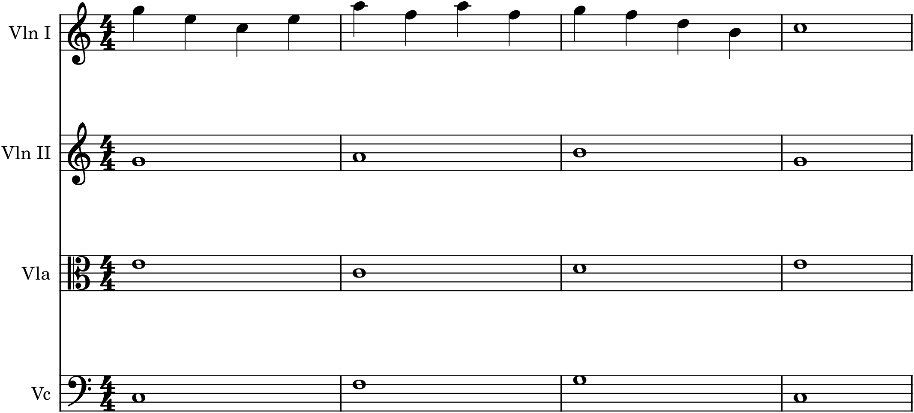

Two instruments converse; four instruments become a small society. Adding two more players crosses an important threshold, because four voices is the sweet spot of ensemble writing: enough to sound a complete four-note harmony (Part 2) with a real bass, yet few enough that each part can still be an independent, singable line. The model — the most perfect small ensemble ever devised — is the string quartet, and everything in this chapter is framed around it, though the same principles serve a wind quartet, a vocal quartet, or any group of four. And here is the happy secret: you already know how to do this. Writing for four instruments is the four-part writing of Chapter 14, brought to life with bows and breath instead of noteheads on a page.
30.1The string quartet
The string quartet is two violins, a viola, and a cello — high, high, middle, and low. Two things about the group are worth fixing in mind. First, the four instruments cover, between them, an enormous range, from the cello’s deep C two octaves below middle C up to the first violin’s highest heights — a full orchestra’s worth of compass in four players. Second, they are notated in three different clefs: the two violins in treble, the cello in bass, and the viola in the alto clef (the C-clef centred on middle C, Chapter 5), which keeps its middle-register part on the staff without a thicket of ledger lines. That alto clef is the one genuinely new piece of reading here, and it is worth getting comfortable with, because the viola is the quartet’s crucial inner voice.
30.2Four instruments, four voices
Map the quartet onto the four-part texture you already know and it falls into place: the first violin is the soprano (usually the melody), the second violin the alto, the viola the tenor, and the cello the bass. Every rule of Chapter 14 applies without change — smooth voice leading, common tones held, no parallel fifths or octaves, the leading tone resolved, sensible doubling — because a string quartet is, quite literally, four independent voices sounding harmony together.

The passage in Figure 30.1 is deliberately plain — a melody over sustained harmony — to show the mapping clearly, but it demonstrates the essential move: take a good four-part harmonic texture and assign each voice to an instrument in its own range. Everything you practised harmonizing chorales and writing voice leading pays off directly here.
30.3Spacing and register
The spacing principles of four-part writing and piano writing carry straight over. Keep the upper three voices — the two violins and viola — reasonably close together, within an octave or so of each other, for a full, blended sound; and let the cello range freely below, with a comfortable gap above it, since the bass wants room (Chapter 27’s caution against a muddy, crowded low register applies to the cello and viola in their low reaches). Give each instrument music that sits well in its own compass: brilliant, singing lines high in the first violin; warm middle-register writing for the viola; a firm, resonant foundation in the cello. Music that ignores the instruments’ natural registers — a viola forced high, a cello crowded up against the viola — sounds strained and muddy even when the notes are “correct.”
30.4Distributing the texture
Who plays what, and when, is where a quartet comes alive. The default is the first violin on melody and the others accompanying, but — exactly as with the duet (Chapter 29) — the melody should not stay in one instrument. Give it to the cello and let the violins float above; hand it to the viola for a warm, inner-voiced tune; pass a phrase from first violin to second in dialogue. The three non-melody instruments, meanwhile, can do several things: sustain chords beneath the tune (as in the figure), play a rhythmic accompaniment figure, or — most rewardingly — weave independent countermelodies (Chapter 28), so that the texture becomes true four-part counterpoint rather than melody-plus-filler. A great quartet moves fluidly between homophony (one melody, three supporting) and polyphony (four independent lines), and the interest lies in the shifting.
30.5Balance
Four instruments of unequal weight must be balanced so the important line is heard. The melody — wherever it currently lives — needs to stand out, which means the accompanying parts should be simpler, softer, or spaced so as not to cover it. Beware burying an inner-voice or cello melody under busy violins above it; when you move the tune to a lower instrument, thin and lift the parts around it. Doubling is a tool here: two instruments playing the same line (in unison or at the octave) reinforce it, useful for a strong melody or a climactic moment, though it costs you a voice. And remember that a quartet need not always play tutti — dropping to two or three instruments thins the texture for contrast, and the return to all four then feels full. Balance, in the end, is just making sure the listener’s ear is led to what matters at each moment.
In MuseScore
A string quartet is a four-instrument score, and MuseScore has a ready-made template with the correct clefs — including the viola’s alto clef — already set up.
- Start from the String Quartet template (File ▸ New, then choose it, or add Violin, Violin, Viola, Cello): four staves, correctly clefed, the viola in alto clef automatically.
- Write it as four-part harmony (Chapter 14): melody in the first violin, bass in the cello, inner voices in the second violin and viola, watching voice leading and parallels exactly as in a chorale.
- Read the alto clef as you enter the viola — middle C sits on the centre line. If it feels unfamiliar, MuseScore will play back what you write, so let your ear confirm the pitches.
- Balance in the Mixer (F10): solo the melody instrument to hear it alone, then bring the others in and adjust so the tune stays on top. Extract parts (File ▸ Parts) to give each player their own line.
Try it: take a four-part harmonization you wrote in Project 2, or the passage in Figure 30.1, and set it for string quartet — soprano to first violin, alto to second, tenor to viola (in alto clef), bass to cello. Play it back and hear your chorale become a quartet. Then pass the melody to the cello for a few bars and lighten the parts above it, and hear the same harmony wear a completely different colour. That redistribution of the same material across a small ensemble is exactly what Project 5, and the orchestra of Part 7, are built on.